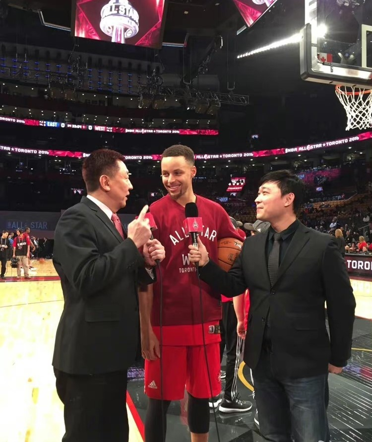
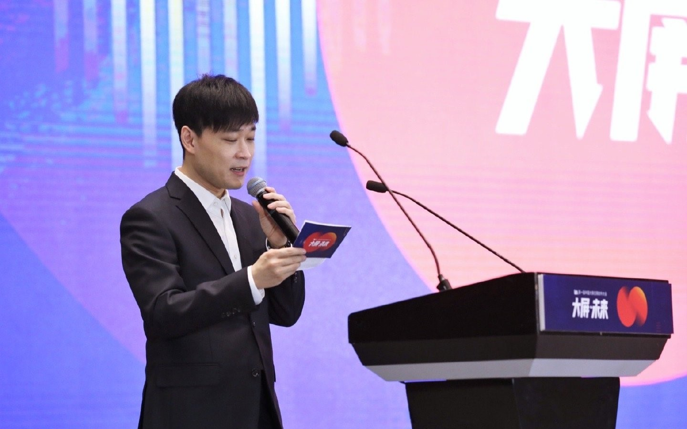

Career
Sports Commentator
Zhao Lu is now working at BesTV, mainly doing sports commentary, usually he is a presenter, and there will be a professional in the sport to partner with him to commentate. Nevertheless, Lu has to be very knowledgeable about the sports he is commentating on. He has commentated on basketball, soccer, tennis, baseball and many other sports.
Dubbing - voice actor
Dubbing is Lu's biggest sideline. It includes TV series, movies and translated movies, animation, games, radio dramas and other project types. Mr. Zhao Lu has dubbed a great number of roles, everything from leading roles to bit players.
Movies in which Zhao Lu has participated in dubbing
- Kingsman:The Secret Service
- Ant-Man
- Survivor
- Gods of Egypt
- The huntsman winter's war
TV series in which Zhao Lu participated in dubbing
- The Journey of Flower
- Meteor Garden
- Startling by Each Step
Games in which Zhao Lu participated in dubbing
- Genshin Imapct
- Tears of Themis
- Light and Night
More information: click here
Interview about dubbing
Is there anything you find interesting in the recording?
I was definitely very apprehensive the first time I dubbed a film, because I was actually a newcomer to dubbing at that time, especially in the area of animation, not to mention that it was a big movie and such a good movie, so I felt a little bit timid about it. The second time, after all, I've been in the profession for a while, and I've been dubbing movies for two or three years, so I probably feel a little more sophisticated in every way.The dubbing process was very difficult, mainly thanks to the fact that I had a particularly strict and responsible dubbing director, which is very fortunate for the actors. As we all say, there are a thousand Hamlets in a thousand people's eyes, and each person may have a different perception of the role or the feeling of each scene. It is a process of growth.
What are the essential differences between dubbing for translated films and games, animation and TV series?
I think the difference is still very significant, because they are after all different forms of artistic expression, different artistic genres, so there are definitely differences in their interpretation. TV dramas, especially fashion dramas, may require you to be more relaxed, more natural and more like talking, including in terms of spitting and pronunciation may not need to be so demanding, and even the voice does not need to be too intense, the voice is a bit more loose, it will be more simultaneous and more like an actor. But in the case of the translated film, after all, it has the characteristics of a foreigner, so in order to follow his expressions, his movements, and his state, not to mention that this is a British drama, and it is about the character setting of a gentleman, so then, maybe, you will be a little bit more regular in the language, except you may usually need to hold a little in the tone, but you also need to be a bit more delicate and sophisticated in terms of language.